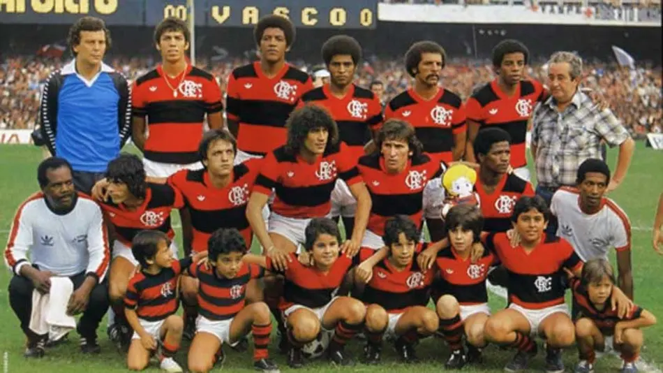

O Clube de Regatas do Flamengo, fundado em 17 de novembro de 1895 no Rio de Janeiro para o remo, tornou-se um gigante do futebol mundial após criar seu departamento esportivo em 1911/1912. Conhecido pela maior torcida do Brasil, o Rubro-Negro é multicampeão, destacando-se o Mundial e Libertadores de 1981, além de múltiplos Brasileiros e Cariocas.
O Flamengo é o maior vencedor do Campeonato Carioca e um dos clubes brasileiros com mais títulos internacionais, mandando seus jogos no Maracanã.
